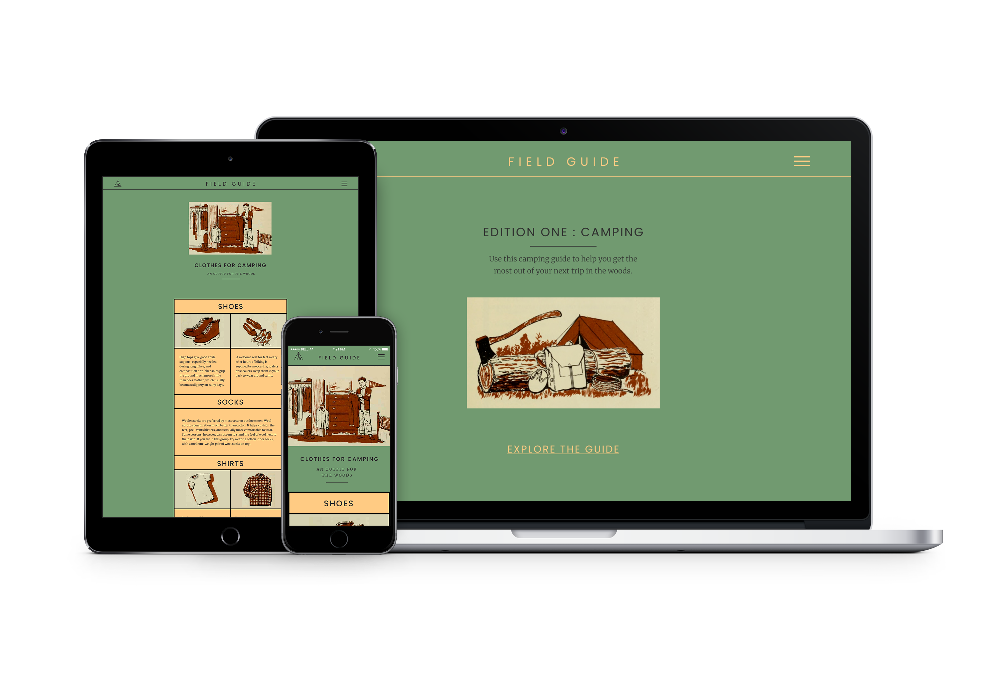
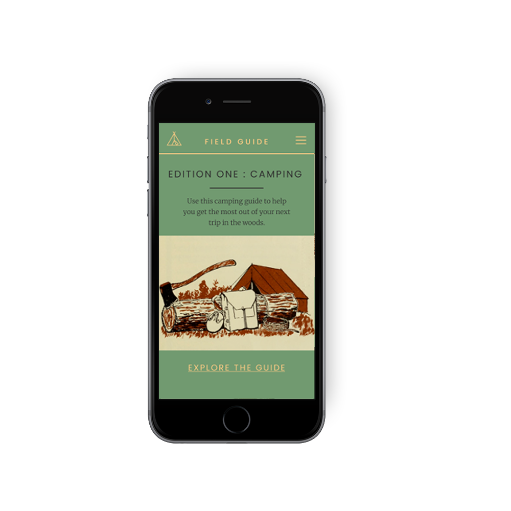
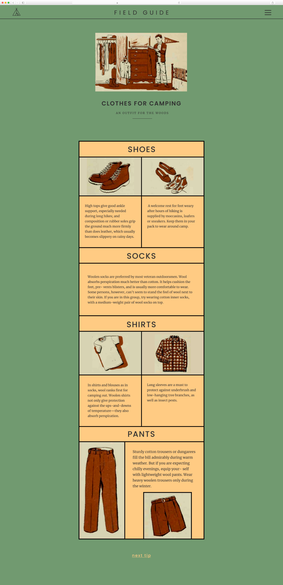
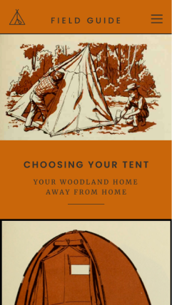
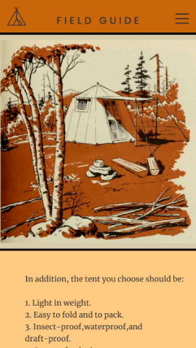
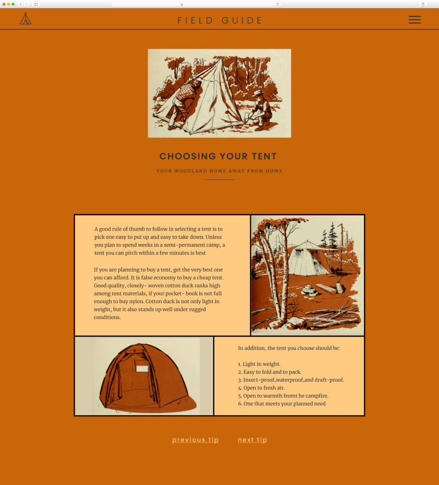
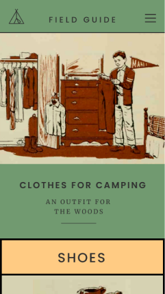
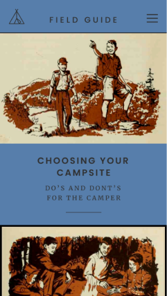
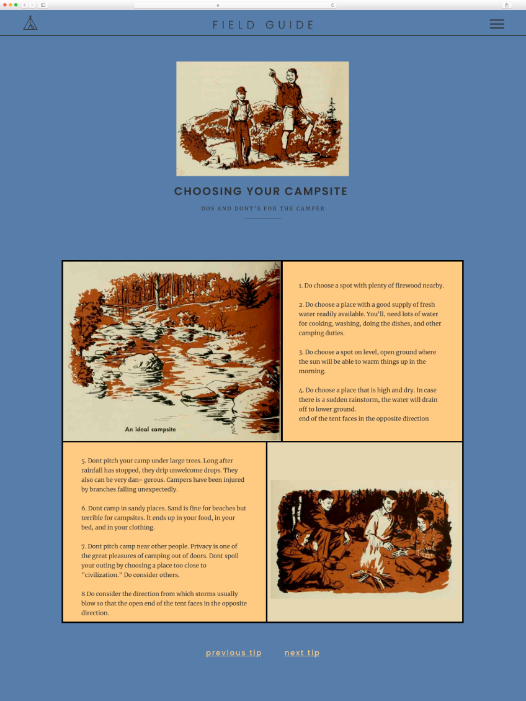

Website concept for Field Guide.
The goal for this project was to take a print publication that does not have an online presence and turn it into a website.
I chose an old camping guidebook, and turned it into an online field guide for first time campers. My idea was to use the illustrations from the book and contrast them with a modern and clean site.
I wanted the experience to feel fun and educational, and also for the site to be easy to use and understand.
I thought that it would be a fun idea for the Field Guide brand to expand in the future, by offering different kinds of guides as well!
Role:
Website Design








